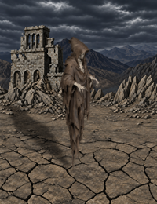
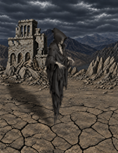

Necropolis Wight and Wraith · opus -> astra 按固定画布离线合成，并非游戏截图。待机 4 fps，其余 8 fps，供审阅，不代表游戏速度。展示图使用游戏背景，动作视频使用灰底以便查看轮廓。
Fixed-canvas offline composites, not game captures. Holding: 4 fps; other clips: 8 fps for review, independently of runtime timing. Still showcases use the installed background; motion videos use gray for silhouette inspection.
Measurements · Validation
幽灵 
MOVING · 8 frames MOUSEON · 10 frames HOLDING · 8 frames HITTED · 6 frames DEFENCE · 10 frames DEATH · 8 frames TURN_L · 2 frames TURN_R · 2 frames ATTACK_UP · 7 frames ATTACK_FRONT · 7 frames ATTACK_DOWN · 7 frames SHOOT_UP · 7 frames SHOOT_FRONT · 7 frames SHOOT_DOWN · 7 frames MOVE_START · 1 frames MOVE_END · 1 frames
阴魂 
MOVING · 8 frames MOUSEON · 10 frames HOLDING · 8 frames HITTED · 6 frames DEFENCE · 10 frames DEATH · 8 frames TURN_L · 2 frames TURN_R · 2 frames ATTACK_UP · 7 frames ATTACK_FRONT · 7 frames ATTACK_DOWN · 7 frames SHOOT_UP · 7 frames SHOOT_FRONT · 7 frames SHOOT_DOWN · 7 frames MOVE_START · 1 frames MOVE_END · 1 frames